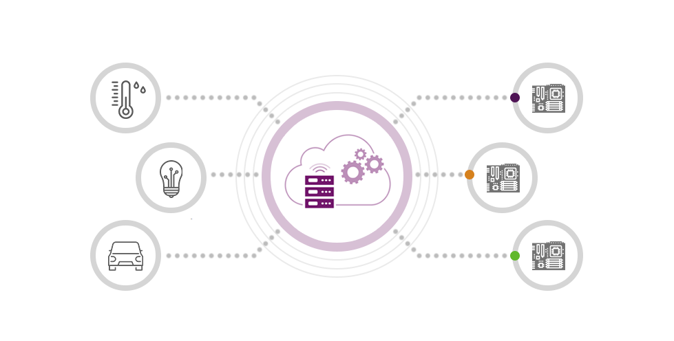

The Internet of Things (IoT) is a system of interrelated computing devices, mechanical and
digital machines, objects, people that are provided with unique identifiers and the
ability to
transfer data over a network
without requiring human-to-human or human-to-computer interaction.
- Advantages of IoT
- Technical Optimization:
- IoT technology helps a lot in improving technologies and making them better.
- Minimize Human Effort:
- As the devices of IoT interact and communicate with each other and do lot of task for us, then they minimize the human effort.
- Save Time:
- As it reduces the human effort then it definitely saves out time. Time is the primary factor which can save through IoT platform.

- Disadvantages of IoT
- Serity:
- As the IoT systems are interconnected and communicate over networks. The system offers little control despite any security measures, and it can be lead the various kinds of network attacks.
- Privacy:
- Even without the active participation on the user, the IoT system provides substantial personal data in maximum detail.
- Flexibility:
- The flexibility of an is mainly regarding integrating with another system as there are many diverse systems involved in the process.